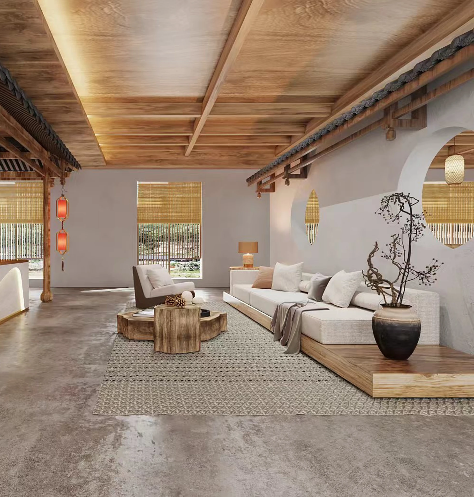
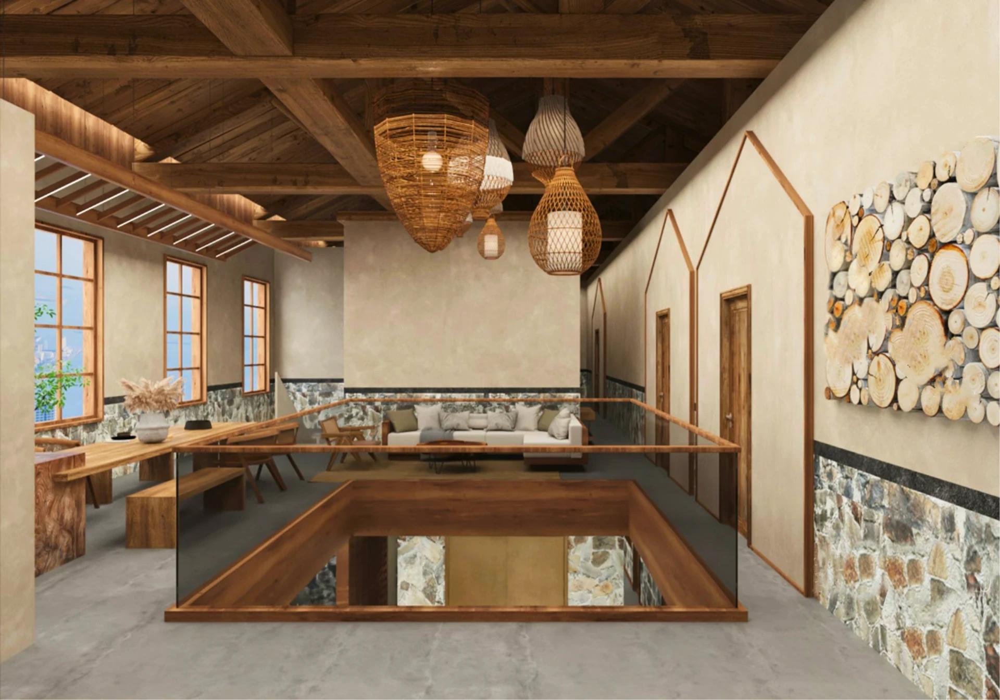
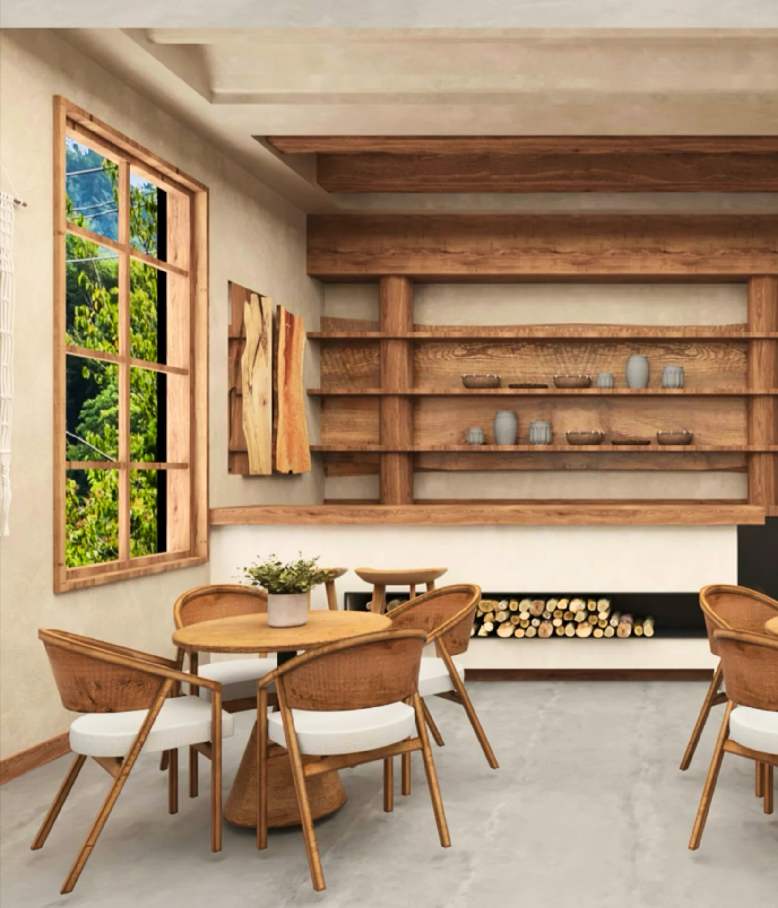
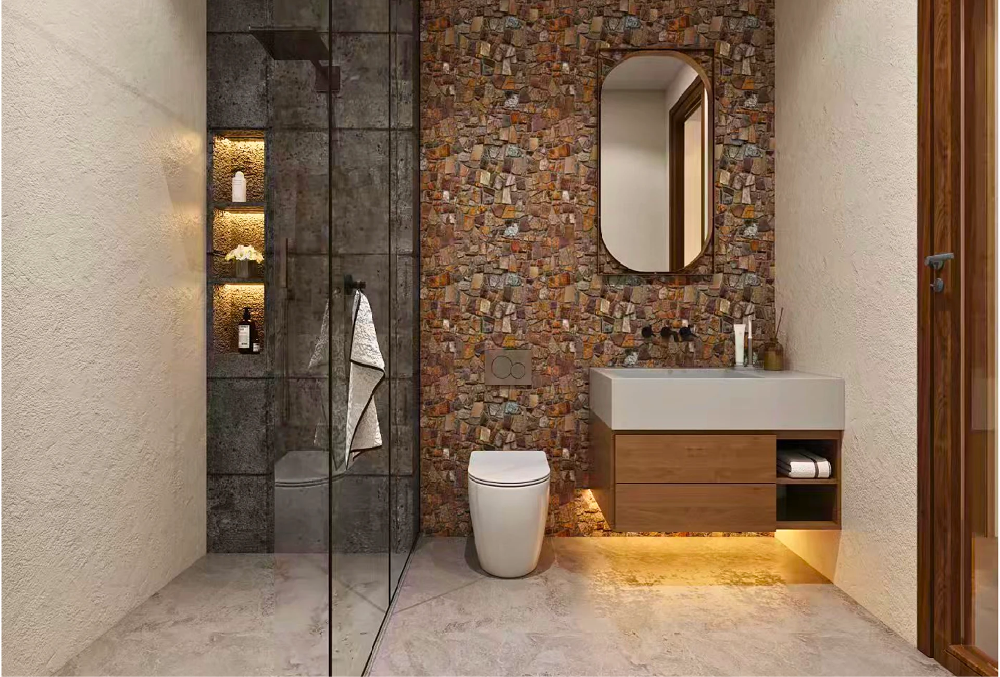

山居 — 把屋檐留在室内
改造老屋最常见的错误，是把旧的都拆干净再刷成白色。 这个方案反过来：木梁、瓦檐、石墙全部留着， 新东西只以最轻的方式放进去。
- Type
- 民宿 / 乡村改造
- Scenes
- 大堂 · 起居 · 中庭 · 餐厅 · 客卫
- Palette
- 夯土 · 原木 · 毛石
- Style
- 新中式 / Wabi-sabi
- Role
- 方案 / 建模 / 渲染

大堂：一段完整的木构屋檐被保留在室内，成为入口的第一道门。
让新旧各自说话
整个方案只有一条规则：老的部分不修饰，新的部分不模仿。 木梁保留原色与开裂，毛石墙留出粗糙的接缝； 而新加的家具与前台全部做成干净的几何体量，不做任何做旧。
对比之下，两者都被看见了。如果新家具也做成仿古的样子， 老屋的价值反而会被稀释——假的旧会让真的旧显得可疑。
最明确的一处对撞是大堂前台：一条连续起伏的波浪形白色体量， 底部脱开地面并藏灯，像漂在夯土地上。 它是全场唯一的曲面，也是唯一的纯白。


假的旧，
会让真的旧显得可疑。
从村口到床，一段缓坡
民宿的体验是一条时间线，不是一堆房间。 我把五个场景排成一段逐渐安静下来的序列： 大堂最有仪式感，中庭最开阔，起居开始放松， 餐厅回到日常，客卫是最私密的收尾。
明度也跟着走：大堂用红灯笼与暖射灯做高对比， 到餐厅只剩窗外的自然光。人在走的过程中， 眼睛和心跳一起慢下来。


五种材料，一种温度
材料全部取当地可得：夯土、原木、毛石、藤编、宣纸。 它们的共同点是都会随时间变化——木会更深， 土会更斑驳，藤会更亮。这类空间不追求「刚装好」的状态， 而是三年后更好看。
唯一的高饱和度是红：灯笼与织锦挂毯。 它们总量不超过画面的 5%，但足以让整个暖灰色调不至于寡淡。
- 夯土墙
- Rammed earth
- 原木梁
- Reclaimed fir
- 毛石墙裙
- Local stone
- 藤编灯罩
- Rattan
- 点睛红
- ≤ 5% 面积
好看之外还得能住
保留木构屋檐是这个方案最有力的决定，但它带来两个现实问题： 清洁（瓦片积灰无法擦拭）和 保温（屋面无法做常规隔热层）。 落地时需要在瓦下加一层隐藏的透气防尘膜。
另外，大堂的波浪形前台在渲染中很漂亮， 但曲面白色人造石的造价与拼缝控制难度都很高。 替代方案是分段直线折面近似曲线—— 远看效果接近，成本降一半。